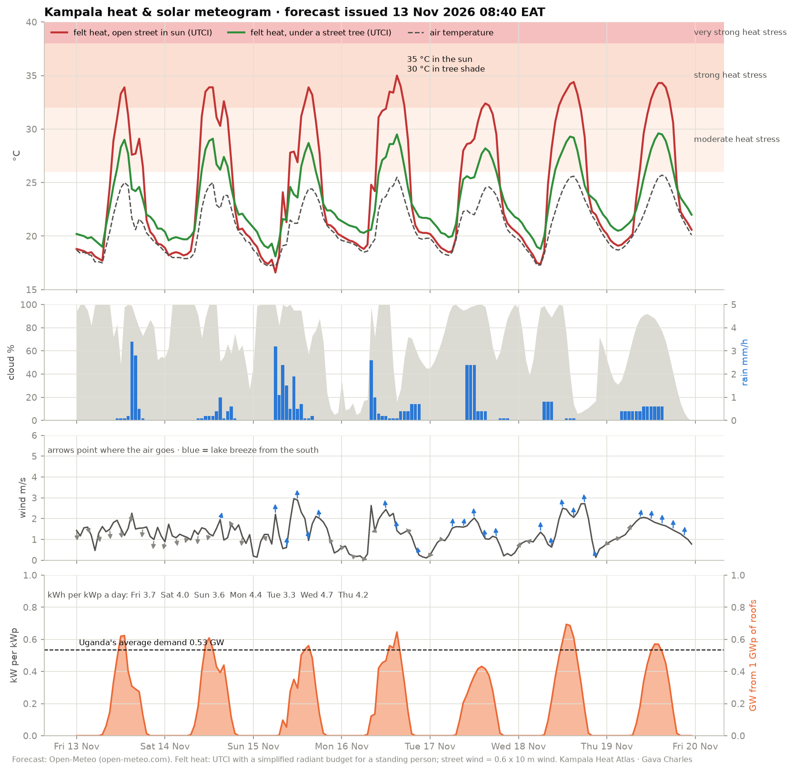

Heat & solar meteogram
The next seven days in central Kampala, translated through the 3D model: felt heat (UTCI) for someone in an open street and under a street tree, cloud and rain, the lake breeze, and rooftop solar output. Refreshed every morning at 06:00 from the Open-Meteo forecast. Under a tree the felt heat is a few degrees lower by day and slightly higher at night, because the canopy holds in the warmth that would otherwise radiate to the sky.
